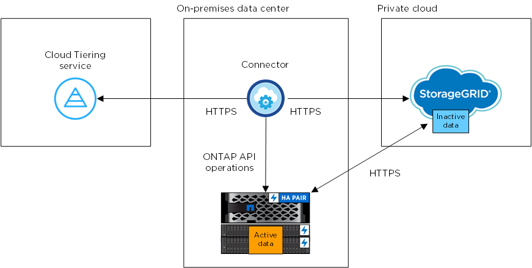

要求變更文件
要求變更文件 編輯此頁面
編輯此頁面 瞭解如何作出貢獻
瞭解如何作出貢獻將內部部署 ONTAP 的資料叢集分層至 StorageGRID 不再需要
將非作用中的資料分層到物件上、以釋放內部ONTAP 物件叢集上的空間StorageGRID 。
快速入門
請依照下列步驟快速入門、或向下捲動至其餘部分以取得完整詳細資料。
您需要下列項目：
-
內部ONTAP 執行ONTAP 的內部版本的叢集執行的是更新版本的版本、並透過使用者指定的連接埠連線StorageGRID 至更新版本。 "瞭解如何探索叢集"。
-
支援 AWS 存取金鑰的 S3 權限、可支援支援支援支援的版本。 StorageGRID
-
安裝在內部部署上的 Connector 。
-
連接器的網路功能、可將 HTTPS 連線傳出 ONTAP 至物件叢集、 StorageGRID 到物件叢集和雲端分層服務。
在Cloud Manager中、選取內部作業環境、按一下「啟用」以使用分層服務、然後依照提示將資料分層StorageGRID 至物件。
需求
驗證 ONTAP 支援您的物件叢集、設定網路、以及準備物件儲存。
下圖顯示每個元件及其之間需要準備的連線：


|
Connector 與 StorageGRID 物件之間的通訊僅供物件儲存設定之用。 |
準備 ONTAP 您的叢集
將資料分層至異地時、您的叢集必須符合下列要求。 ONTAP StorageGRID
- 支援 ONTAP 的支援功能平台
-
-
使用ONTAP 更新版本的時：您可以將資料從AFF 包含FAS All SSD Aggregate或All HDD Aggregate的各種系統、或是包含All SSD Aggregate或All HDD Aggregate的系統進行分層。
-
使用ONTAP NetApp 9.7及更早版本時：您可以將AFF 資料從包含FAS All SSD Aggregate的各種系統、或是用整合式全SSD的系統進行分層。
-
- 支援 ONTAP 的支援版本
-
更新版本 ONTAP
- 授權
-
您的Cloud Manager帳戶不需要Cloud Tiering授權、FabricPool 也不需要ONTAP 在將資料分層StorageGRID 至無法使用的情況下、在這個叢集上使用非功能性授權。
- 叢集網路連線需求
-
-
透過使用者指定的連接埠、由支援物件叢集啟動 HTTPS 連線（連接埠可在分層設定期間設定） ONTAP StorageGRID 。
可在物件儲存設備中讀取及寫入資料。 ONTAP物件儲存設備從未啟動、只是回應而已。
-
連接器必須駐留在內部環境中、因此需要傳入連線。
叢集與雲端分層服務之間不需要連線。
-
每個裝載您要分層的磁碟區的節點都需要叢集間LIF ONTAP 。LIF 必須與 IPspac_ 建立關聯、 ONTAP 以便連接物件儲存設備。
設定資料分層時、 Cloud Tiering 會提示您使用 IPspace 。您應該選擇每個 LIF 所關聯的 IPspace 。這可能是您建立的「預設」 IPspace 或自訂 IPspace 。深入瞭解 "生命" 和 "IPspaces"。
-
- 支援的磁碟區和集合體
-
Cloud Tiering 可以分層的磁碟區總數可能低於 ONTAP 您的整套系統上的磁碟區數量。這是因為磁碟區無法從某些集合體分層。請參閱 ONTAP 的《》文件 "功能或功能不受 FabricPool 支援"。
|
|
Cloud Tiering 支援 FlexGroup 從 ONTAP 功能完善的 9.5 開始的各種功能。安裝程式的運作方式與任何其他 Volume 相同。 |
準備 StorageGRID
必須符合下列需求。 StorageGRID
- 支援 StorageGRID 的支援版本
-
支援不支援更新版本的支援。StorageGRID
- S3 認證
-
當您設定 StorageGRID 層疊至物件時、您需要使用 S3 存取金鑰和秘密金鑰來提供 Cloud Tiering 。雲端分層使用關鍵來存取您的儲存庫。
這些存取金鑰必須與具有下列權限的使用者相關聯：
"s3:ListAllMyBuckets", "s3:ListBucket", "s3:GetObject", "s3:PutObject", "s3:DeleteObject", "s3:CreateBucket" - 物件版本管理
-
您不得在 StorageGRID 物件存放區上啟用物件版本管理功能。
建立或切換連接器
需要連接器才能將資料分層至雲端。將資料分層至 StorageGRID 無法使用時、內部環境中必須有連接器可供使用。您可能需要安裝新的 Connector 、或確定目前選取的 Connector 位於內部部署。
為連接器準備網路
確認連接器具備所需的網路連線。
-
確保安裝 Connector 的網路啟用下列連線：
-
透過連接埠 443 （ HTTPS ）連至雲端分層服務的傳出網際網路連線
-
透過連接埠 443 連線至 StorageGRID 支援的 HTTPS 連線
-
透過連接埠443連線至ONTAP 您的SURF叢 集管理LIF的HTTPS連線
-
將非作用中資料從第一個叢集分層到 StorageGRID 不活動資料
準備好環境之後、請從第一個叢集開始分層處理非作用中資料。
-
將用於HTTPS通訊的伺服StorageGRID 器FQDN和連接埠。
-
具備所需 S3 權限的 AWS 存取金鑰。
-
選取內部叢集。
-
按一下「啟用」以取得分層服務。

-
選擇您的供應商：選擇* StorageGRID 《》、然後按一下*「繼續*」。
-
完成「 * 分層設定 * 」頁面上的步驟：
-
伺服器：輸入StorageGRID 支援此功能的伺服器的FQDN、ONTAP 搭配StorageGRID 使用此功能進行HTTPS通訊時應使用的連接埠、以及具備所需S3權限之帳戶的存取金鑰和秘密金鑰。
-
* Bucket ：新增儲存區或選取以前置字元_Fabric集區_開頭的現有儲存區、然後按一下*繼續。
因為連接器的 IAM 原則可讓執行個體在以該確切字首命名的儲存區上執行 S3 動作、所以需要使用 Fabric 資源池 _ 字首。例如、您可以命名S3儲存區_Fabric集區-AFF1、其中AFF1是叢集的名稱。
-
* 叢集網路 * ：選取 ONTAP 要用於連接物件儲存設備的 IPspace 、然後按一下 * 繼續 * 。
選擇正確的IPspace可確保Cloud Tiering能夠設定從ONTAP 物件儲存到物件StorageGRID 儲存的連線。
-
-
在「層級磁碟區」頁面上、選取您要設定分層的磁碟區、然後啟動「層級原則」頁面：
-
若要選取所有Volume、請勾選標題列中的方塊（
 ），然後單擊* Configure Volume*（配置卷*）。
），然後單擊* Configure Volume*（配置卷*）。 -
若要選取多個磁碟區、請勾選每個磁碟區的方塊（
 ），然後單擊* Configure Volume*（配置卷*）。
），然後單擊* Configure Volume*（配置卷*）。 -
若要選取單一Volume、請按一下該列（或
 圖示）。
圖示）。
-
-
在_分層原則_對話方塊中、選取分層原則、選擇性地調整所選磁碟區的冷卻天數、然後按一下*套用*。

您已成功設定資料分層、從叢集上的磁碟區到 StorageGRID 物件。
您可以新增其他叢集、或檢閱叢集上作用中和非作用中資料的相關資訊。如需詳細資訊、請參閱 "從叢集管理資料分層"。